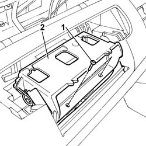
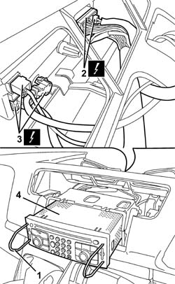
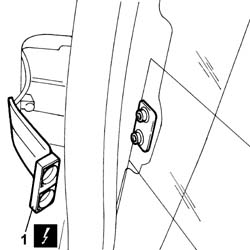
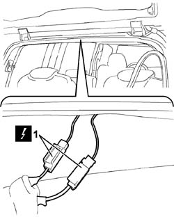
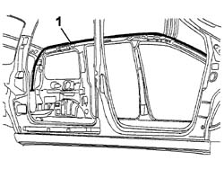

5580P24 CONNECT CONTROL UNIT SUPPORT - R.R.
- Path
- Procedures > 55 ELECTRICAL EQUIPMENT > 5580 SPECIAL ACCESSORIES > 5580P CONNECT PANEL > 5580P24 CONNECT CONTROL UNIT SUPPORT - R.R.
- Kind
- repair procedure (removal / refitting; the operation number is the code)
- Applies to
- all engines; all production periods
- Interactive page
- https://sloeber94.github.io/elrnDB-fUlss/en/#/179007642
Applies to: all engines; all production periods
 Removing
Removing
 Refitting
RefittingOp. 5530B56 BATTERY DRIP TRAY COVER - R.R.
- Disconnect the negative battery terminal.
Op. 7040A74 TRIM UNDER CONTROL PANEL - R.R.
Op. 5010B66 AIR DUCT BETWEEN TIMING CASING AND CENTRE VENT IN DASHBOARD - R.R.
Op. 5010C30 CENTRAL AIR OUTLET ON FASCIA - R+R
Op. 5580P20 CENTRALINA DEL CONNECT - S.R.
1. Undo the retaining bolts.
2. Remove the Connect control unit support.

Applies to: all engines; all production periods
Refitting
Removing- Position the Connect control unit support and tighten the fixing bolts
Op. 5580P20 CENTRALINA DEL CONNECT - S.R.
Op. 5510C30 ENGINE TIMING SENSOR - R+R
Op. 5010B66 AIR DUCT BETWEEN TIMING CASING AND CENTRE VENT IN DASHBOARD - R.R.
Op. 7040A74 TRIM UNDER CONTROL PANEL - R.R.
- Connect the negative battery terminal.
Applies to: all engines; all production periods
Removing
RefittingOp. 5530B56 BATTERY DRIP TRAY COVER - R.R.
- Disconnect the negative battery terminal.
[All]
Op. 7065C30 INTERIOR L/H OR R/H GRAB HANDLE (ONE) - R+R
Op. 7040H30 FRONT PILLAR TRIM - R R
Op. 7040H42 REAR PILLAR TRIM - R R
Op. 7065C68 REAR VIEW MIRROR - R+R
Op. 7065C62 ADDITIONAL INTERIOR REAR VIEW MIRROR - R.R.
Op. 7040E10 FRONT COURTESY LIGHT - R+R
Op. 7040E12 CENTRAL COURTESY LIGHT - R+R
Op. 7040E16 REAR COURTESY LIGHT - R+R
Op. 7040H33 GLASSES HOLDER (1) LH OR RH, ON ROOF TRIM - R R
[Both]
Op. 7065C34 L/H OR R/H SUN BLIND (ONE) - R+R
Op. 7040H16 ROOF PANEL LINING - R R
Op. 7040A74 TRIM UNDER CONTROL PANEL - R.R.
Op. 5010B66 AIR DUCT BETWEEN TIMING CASING AND CENTRE VENT IN DASHBOARD - R.R.
Op. 5010C30 CENTRAL AIR OUTLET ON FASCIA - R+R
1. Using tools with the parts code no. 46515517, partly extract the Connect control unit.
2. Disconnect the electrical connections.
3. Disconnect the electrical connections for the aerials.
4. Remove the Connect control unit.
- Apply a probe cable to the end of the wiring harness and secure with care. Withdraw the wiring harness from the centre of the instrument facia and disconnect the probe cable without removing.
- Apply a second probe cable to the end of the wiring harness and secure with care. Withdraw the wiring harness from the facia on the left side pillar side and disconnect the probe cable without removing.

Applies to: all engines; all production periods
1. Disconnect the radio aerial electrical connection from the left side opening window.

Applies to: all engines; all production periods
1. Working at the top of the tailgate compartment, disconnect the multifunction aerial electrical connections.

Applies to: all engines; all production periods
1. Release the wiring harness from the multifunction aerial to the Connect panel from the anchorages and remove from the ceiling.

Applies to: all engines; all production periods
Refitting
Removing- Positon the wiring harness from the multifunction aerial to the Connect panel on the roof and secure to its anchorage points;
- Connect the electrical connections to the multifunction aerial.
- Connect the radio aerial electrical connection from the left side opening window.
- Apply the probe lead to the end of the wiring harness and secure with care. Pass inside the facia on the left side pillar and disconnect the probe cable.
- Apply the probe lead to the end of the wiring harness and secure with care. Pass inside the central aerial of the instrument facia and disconnect the probe cable.
- Remove the Connect control unit.
- Disconnect the electrical connections for the aerials;
- Fully insert the Connect control unit until it is properly secured.
Op. 5010C30 CENTRAL AIR OUTLET ON FASCIA - R+R
Op. 5010B66 AIR DUCT BETWEEN TIMING CASING AND CENTRE VENT IN DASHBOARD - R.R.
Op. 7040A74 TRIM UNDER CONTROL PANEL - R.R.
Op. 7040H16 ROOF PANEL LINING - R R
[Both]
Op. 7065C34 L/H OR R/H SUN BLIND (ONE) - R+R
Op. 7040H33 GLASSES HOLDER (1) LH OR RH, ON ROOF TRIM - R R
Op. 7040E16 REAR COURTESY LIGHT - R+R
Op. 7040E12 CENTRAL COURTESY LIGHT - R+R
Op. 7040E10 FRONT COURTESY LIGHT - R+R
Op. 7065C62 ADDITIONAL INTERIOR REAR VIEW MIRROR - R.R.
Op. 7065C68 REAR VIEW MIRROR - R+R
Op. 7040H42 REAR PILLAR TRIM - R R
Op. 7040H38 CENTRAL PILLAR UPPER ELEMENT - R R
Op. 7040H30 FRONT PILLAR TRIM - R R
[All]
Op. 7065C30 INTERIOR L/H OR R/H GRAB HANDLE (ONE) - R+R
- Connect the negative battery terminal.
Topics linked from this page (19)
- 5010B66 AIR DUCT BETWEEN TIMING CASING AND CENTRE VENT IN DASHBOARD - R.R.
- 5010C30 CENTRAL AIR OUTLET ON FASCIA - R+R
- 5510C30 ENGINE TIMING SENSOR - R+R
- 5530B56 BATTERY DRIP TRAY COVER - R.R.
- 5580P20 CENTRALINA DEL CONNECT - S.R.
- 7040E10 FRONT COURTESY LIGHT - R+R
- 7040E12 CENTRAL COURTESY LIGHT - R+R
- 7040E16 REAR COURTESY LIGHT - R+R
- 7040H16 ROOF PANEL LINING - R R
- 7040H30 FRONT PILLAR TRIM - R R
- 7040H33 GLASSES HOLDER (1) LH OR RH, ON ROOF TRIM - R R
- 7040H38 CENTRAL PILLAR UPPER ELEMENT - R R
- 7040H42 REAR PILLAR TRIM - R R
- 7040H50 REAR PANEL - R R
- 7065C30 INTERIOR L/H OR R/H GRAB HANDLE (ONE) - R+R
- 7065C34 L/H OR R/H SUN BLIND (ONE) - R+R
- 7065C62 ADDITIONAL INTERIOR REAR VIEW MIRROR - R.R.
- 7065C68 REAR VIEW MIRROR - R+R
- E2010 SIDE LIGHTS / NO. PLATE LIGHTS
Topics that link to this page (12)
- 5010B24 UNDER-FACIA AIR DUCTS R R
- 5010B39 FRONT CONNECTION FOR CENTRAL AIR DUCT TO REAR SEATS - R R
- 5010B45 DUCT FROM CLIMATE CONTROL SYSTEM - R R
- 5040C13 AIR CONDITIONER HEATER/DISTRIBUTOR ASSEMBLY - R R
- 5040C22 AIR CONDITIONING FAN ASSEMBLY - R.R.
- 5040C50 AIR CONDITIONING HEATER RADIATOR - R.R.
- 5040C64 A/C MANUAL CONTROL SWITCH (ONE) - R+R
- 5040D75 AIR CONDITIONING RECIRCULATION FLAP CONTROL MOTOR - R.R.
- 5040D90 AIR CONDITIONER SYSTEM WIRING BUNDLE - R R
- 7040A10 DASHBOARD TRIM - R+R
- 7040A97 FACIA TRIM SUPPORT BEAM - R R
- 7040L17 PASSENGER COMPARTMENT FLOOR FRONT CARPET - R R